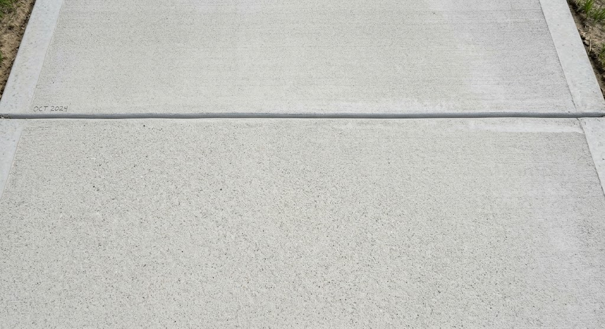
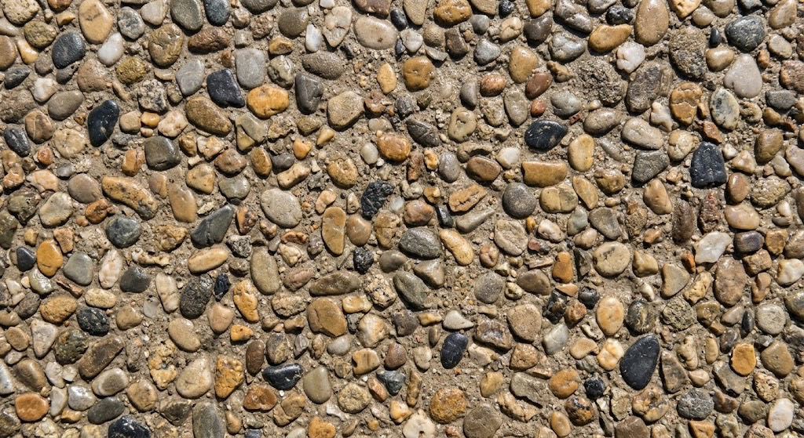
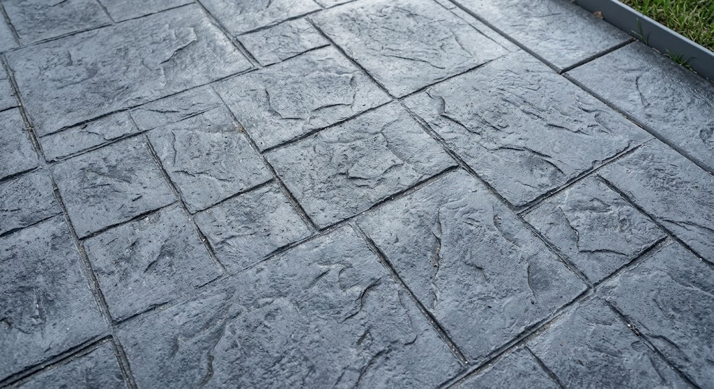
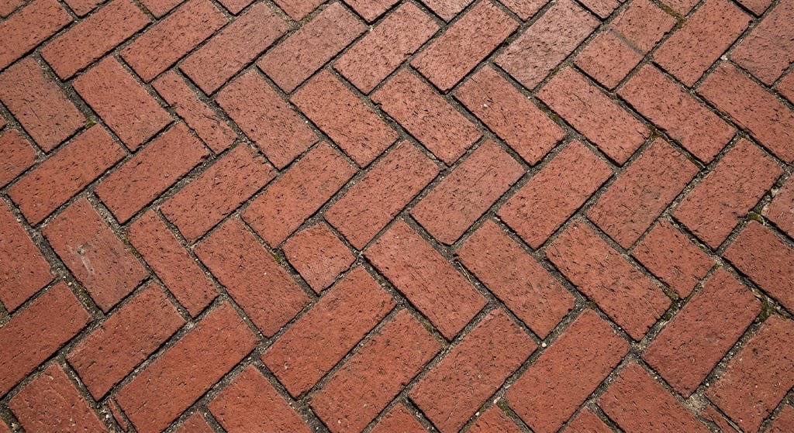
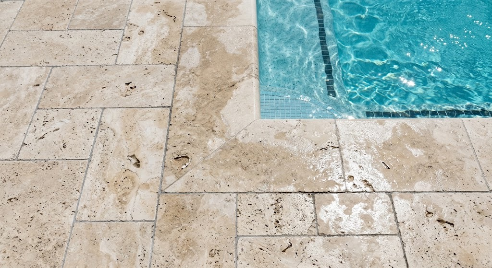
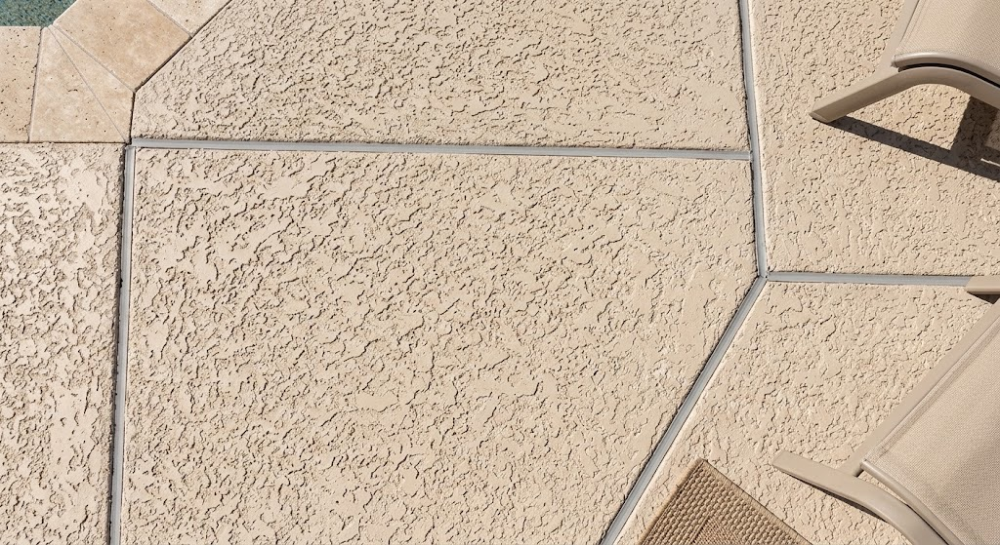

PRESSURE WASHING
Refresh your outdoor surfaces and remove built-up dirt, grime, and outdoor debris.
Get a Free EstimateWe service a variety of common residential exterior surfaces using cleaning methods appropriate for the material and condition.

Common concrete surfaces such as driveways, sidewalks, patios, and walkways.

Concrete with exposed stone or aggregate that creates a textured, decorative appearance.

Decorative concrete with patterns and textures designed to resemble brick, stone, or other materials.

Suitable outdoor pavers, brick surfaces, and hardscape areas.

Suitable concrete and other compatible surfaces around residential pools.

Exterior stucco surfaces, including suitable pool-area walls and outdoor structures.
We can evaluate the surface and recommend an appropriate cleaning method based on the material and its condition.
We focus on providing a thorough clean while treating each surface appropriately.
We evaluate the surface and determine the appropriate approach for the project.
We remove dirt, grime, and buildup from the surface using the appropriate pressure and technique.
We make sure the area is cleaned up and leave the surrounding space ready to use.
We provide landscaping and exterior services throughout Lake Highlands and surrounding areas of the DFW Metroplex.
Contact us for a free estimate on your pressure washing project.
Get a Free Estimate